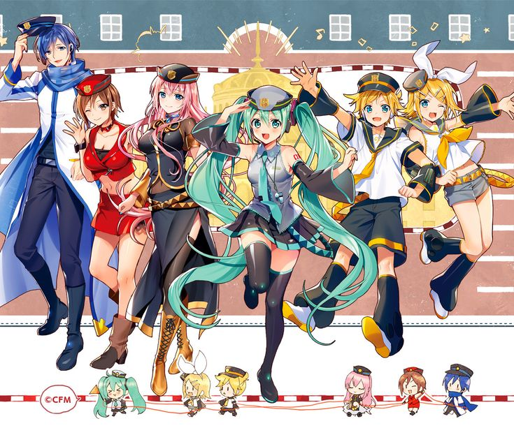
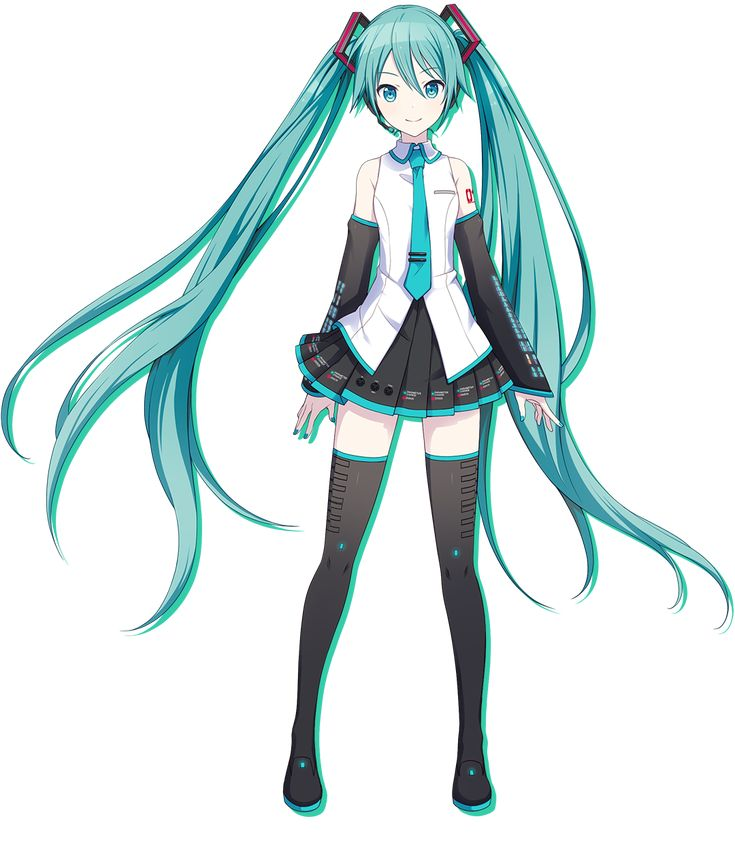
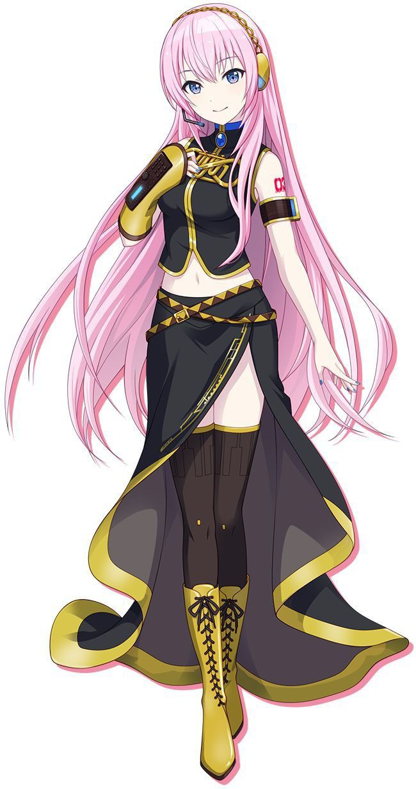
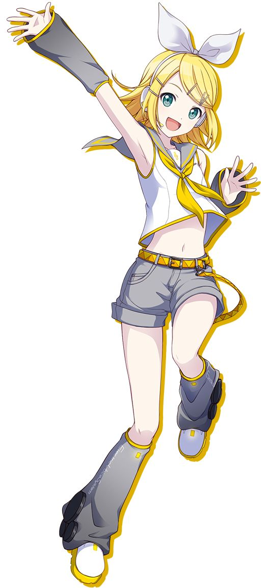
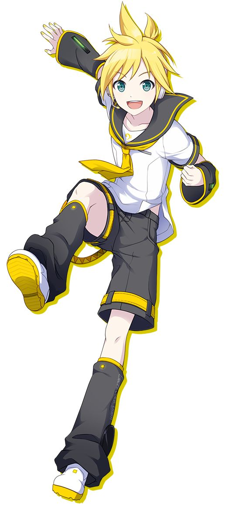
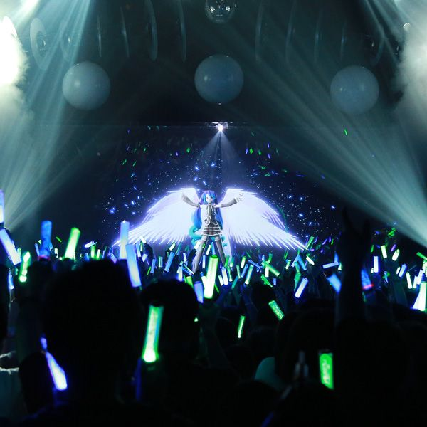

<!DOCTYPE html>
<html lang="en">
<head>
    <meta charset="UTF-8">
    <meta name="viewport" content="width=device-width, initial-scale=1.0">
    <title>Miku fan</title>
    <link rel="stylesheet" href="styles.css">
</head>
<body class = "body">
    
</body>
</html>

    <header class ="header">
    <h1 class="title">Vocaloid</h1>
    </header>



<h2 class = "header2">Historia</h2>
<p>Vocaloid es un programa de computadora de síntesis de voz, capaz de cantar, desarrollado por Yamaha Corporation,
   con la idea original de Music Technology Group de la Universidad Pompeu Fabra de Barcelona, España. 
   El equipo de investigadores encargado del desarrollo de la tecnología de Vocaloid es el mismo de Voctro Labs 
   que a finales del 2011 se fundó para ser la primera empresa que comercializa voces hispanas para Vocaloid 3</p>

<Br></Br>

<h2 class = "header3">Integrantes</h2>
<br>

<div class="int">
    <div class="int2">
        <h2>Hatsune Miku</h2>
        
        <p>Edad : 16</p>
        <p>Estatura : 1.56</p>
        <p>Cumpleaños : 31 de Mayo</p>
    </div>
    
    <div class="int2">
        <h2>Megurine Luka</h2>
        
        <p>Edad : 15</p>
        <p>Estatura : 1.71</p>
        <p>Cumpleaños : 30 de Enero</p>
    </div>
</div>

<div class="int">
    <div class="int2">
        <h2>Kagamine Rin</h2>
        
        <p>Edad : 14</p>
        <p>Estatura : 1.48</p>
        <p>Cumpleaños : 25 de Diciembre</p>
    </div>
    
    <div class="int2">
        <h2>Kagamine Len</h2>
        
        <p>Edad : 14</p>
        <p>Estatura : 1.52</p>
        <p>Cumpleaños : 25 de Diciembre</p>
    </div>
</div>
<br><br><br>


<br>
<h2 class = "cent">Crypton</h2>
<p>Crypton Future Media, Inc., o Crypton, es una compañía multimedia con base en Sapporo, 
    Japón. Desarrolla, importa y vende productos para la industria musical, como generadores
    de audio, CD and DVD, y librerías de efectos de sonido y música de fondo. La compañía también
    ofrece servicios de Tienda en línea, Comunidad en Línea, y contenido para móviles, así como bancos 
    de voz para el software Vocaloid, siendo este el producto más destacado.</p>
 <br><br>
 
 <h3 class = "cent">Discografia de Hatsune Miku </h3>
 
 <p>1. "Exit Tunes Presents Vocalogenesis feat. Hatsune Miku" (2010)
    Uno de los primeros álbumes en alcanzar el puesto número uno en la lista de álbumes de Oricon en Japón.
    Incluye canciones como “Magnet” y “Roshin Yukai.”<br><br>
    2. "Re
    " (2008)
    Productor: Livetune
    Este álbum incluye el popular tema "Packaged" y "Finder", mostrando la voz distintiva de Miku en una serie de canciones electrónicas. <br><br>
    3. "Miku no Hi Kanshasai 39's Giving Day" (2010)
    Un álbum en vivo que captura la esencia de un concierto con Hatsune Miku y otros personajes de Vocaloid. <br><br>
    4. "Re
    " (2013)
    Productor: Livetune
    Incluye temas como "Tell Your World", una de las canciones más emblemáticas y populares de Miku. <br><br>
    5. "Magical Mirai" Series
    Álbumes lanzados anualmente que acompañan el evento de conciertos "Magical Mirai". Cada año presenta nuevas canciones y versiones de temas populares.<br><br>
    6. "Supercell feat. Hatsune Miku" (2009)
    Productor: Supercell
    Incluye éxitos como "Melt", "World is Mine" y "Love is War", que ayudaron a popularizar a Hatsune Miku en su primera etapa. <br><br>
    7. "Project Diva" Soundtracks
    Bandas sonoras de la serie de videojuegos "Project Diva", que presentan una amplia selección de canciones populares y originales de Miku y otros Vocaloids.<br><br>
    8. "Snow Miku 2022"
    Álbum con temas especiales de invierno, lanzado para el evento anual de "Snow Miku" en Sapporo, Japón</p>
<br><br>


<h3 class = "cent">Canciones populares</h3>
<p class = cent>Top 10 Canciones Más Populares de Crypton <br><br>

    <a href="https://www.youtube.com/watch?v=EuJ6UR_pD5s"
     target="_blank">World is Mine</a> – ryo (supercell) feat. Hatsune Miku  <br><br>
    

    
     <a href="https://www.youtube.com/watch?v=shs0rAiwsGQ"
     target="_blank">Senbonzakura</a> – Kurousa-P feat. Hatsune Miku <br><br>
    
    
     <a href="https://www.youtube.com/watch?v=NIqm73xsias"
     target="_blank">"Rolling Girl"</a> – wowaka feat. Hatsune Miku <br><br>
    
    
     <a href="https://www.youtube.com/watch?v=egxSBhfjcTU"
     target="_blank">"Magnet"</a> – minato (Ryuusei-P) feat. Hatsune Miku & Megurine Luka <br><br>
    
    
     <a href="https://www.youtube.com/watch?v=KzD85f77Vfk"
     target="_blank">"Kagamine Len no Bousou"</a> – Owata-P feat. Kagamine Len <br><br>
    
    
     <a href="https://www.youtube.com/watch?v=cQKGUgOfD8U"
     target="_blank">"ECHO"</a> – Crusher-P feat. GUMI <br><br>
    
    
     <a href="hhttps://www.youtube.com/watch?v=PqJNc9KVIZE"
     target="_blank">Tell Your World</a> – livetune feat. Hatsune Miku <br><br>
    
    
     <a href="https://www.youtube.com/watch?v=sSYoz0JmnZo"
     target="_blank">Electric Angel</a> – Yasuo-P feat. Kagamine Rin & Len / Hatsune Miku <br><br>
    
    
     <a href="https://www.youtube.com/watch?v=dSw8CucthGc"
     target="_blank">Meltdown</a> (Roshin Yuukai) – iroha (sasaki) feat. Kagamine Rin <br><br>
    
    
     <a href="https://www.youtube.com/watch?v=I0eeS5wYGzI"
     target="_blank">Ai Kotoba</a> – DECO*27 feat. Hatsune Miku</p>

     <br><br>
    
     <center><video width="640" height="360" controls>
        <source src="imagenes/aaa.mp4" type="video/mp4">
             </video></center>
             
    <p class = "cent">video musical de hatsune miku</p>
    <br><br>
    
    <center><div class = "int2">
        <a href="https://www.instagram.com/colorful_stage_en/">
    <svg xmlns="http://www.w3.org/2000/svg" class="icon icon-tabler icon-tabler-brand-instagram" width="48" height="48" viewBox="0 0 24 24" stroke-width="1.5" stroke="#000000" fill="none" stroke-linecap="round" stroke-linejoin="round">
        <path stroke="none" d="M0 0h24v24H0z" fill="none"/>
        <path d="M4 4m0 4a4 4 0 0 1 4 -4h8a4 4 0 0 1 4 4v8a4 4 0 0 1 -4 4h-8a4 4 0 0 1 -4 -4z" />
        <path d="M12 12m-3 0a3 3 0 1 0 6 0a3 3 0 1 0 -6 0" />
        <path d="M16.5 7.5l0 .01" />
      </svg>
    </a>
    <a href="https://x.com/ColorfulStageEN">
      <svg xmlns="http://www.w3.org/2000/svg" class="icon icon-tabler icon-tabler-brand-twitter-filled" width="44" height="44" viewBox="0 0 24 24" stroke-width="1.5" stroke="currentColor" fill="none" stroke-linecap="round" stroke-linejoin="round">
        <path stroke="none" d="M0 0h24v24H0z" fill="none"/>
        <path d="M14.058 3.41c-1.807 .767 -2.995 2.453 -3.056 4.38l-.002 .182l-.243 -.023c-2.392 -.269 -4.498 -1.512 -5.944 -3.531a1 1 0 0 0 -1.685 .092l-.097 .186l-.049 .099c-.719 1.485 -1.19 3.29 -1.017 5.203l.03 .273c.283 2.263 1.5 4.215 3.779 5.679l.173 .107l-.081 .043c-1.315 .663 -2.518 .952 -3.827 .9c-1.056 -.04 -1.446 1.372 -.518 1.878c3.598 1.961 7.461 2.566 10.792 1.6c4.06 -1.18 7.152 -4.223 8.335 -8.433l.127 -.495c.238 -.993 .372 -2.006 .401 -3.024l.003 -.332l.393 -.779l.44 -.862l.214 -.434l.118 -.247c.265 -.565 .456 -1.033 .574 -1.43l.014 -.056l.008 -.018c.22 -.593 -.166 -1.358 -.941 -1.358l-.122 .007a.997 .997 0 0 0 -.231 .057l-.086 .038a7.46 7.46 0 0 1 -.88 .36l-.356 .115l-.271 .08l-.772 .214c-1.336 -1.118 -3.144 -1.254 -5.012 -.554l-.211 .084z" stroke-width="0" fill="currentColor" />
      </svg>
    </a>
    <a href="https://www.facebook.com/ColorfulStageEN">
      <svg xmlns="http://www.w3.org/2000/svg" class="icon icon-tabler icon-tabler-brand-facebook" width="44" height="44" viewBox="0 0 24 24" stroke-width="1.5" stroke="currentColor" fill="none" stroke-linecap="round" stroke-linejoin="round">
        <path stroke="none" d="M0 0h24v24H0z" fill="none"/>
        <path d="M7 10v4h3v7h4v-7h3l1 -4h-4v-2a1 1 0 0 1 1 -1h3v-4h-3a5 5 0 0 0 -5 5v2h-3" />
      </svg>
    </a>
      <svg xmlns="http://www.w3.org/2000/svg" class="icon icon-tabler icon-tabler-unlink" width="44" height="44" viewBox="0 0 24 24" stroke-width="1.5" stroke="currentColor" fill="none" stroke-linecap="round" stroke-linejoin="round">
        <path stroke="none" d="M0 0h24v24H0z" fill="none"/>
        <path d="M17 22v-2" />
        <path d="M9 15l6 -6" />
        <path d="M11 6l.463 -.536a5 5 0 0 1 7.071 7.072l-.534 .464" />
        <path d="M13 18l-.397 .534a5.068 5.068 0 0 1 -7.127 0a4.972 4.972 0 0 1 0 -7.071l.524 -.463" />
        <path d="M20 17h2" />
        <path d="M2 7h2" />
        <path d="M7 2v2" />
      </svg>
    </div></center>
    <br><br><br>

    <p class = "cent">imagenes que sacadas de los conciertos de Hatsune miku</p>

    <div class="int">
        <div class="int2">
            
            
            
        </div>
        
        <div class="int2">
            
            
            
        </div>
    </div>
    
    <footer class = "cent">Hecho por mima</footer>
